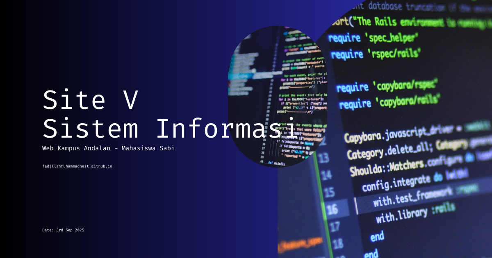

Nama Buku
:
City Planning for Civil Engineers, Environmental Engineers, and Surveyors
Penulis
:
Kurt W Bauer
Halaman
:
504
Buku City Planning for Civil Engineers, Environmental Engineers, and Surveyors ditulis oleh Kurt W. Bauer, seorang ahli dalam perencanaan kota dan pembangunan infrastruktur publik yang memiliki pengalaman panjang dalam perencanaan wilayah serta pengajaran city planning bagi mahasiswa teknik. Buku ini membahas hubungan antara rekayasa teknik dan perencanaan kota, dengan menekankan bagaimana insinyur sipil, insinyur lingkungan, dan surveyor berperan dalam proses pengembangan perkotaan. Materi yang dibahas mencakup konsep dasar perencanaan kota, sejarah dan prinsip urban planning, pengumpulan dan analisis data perkotaan seperti data populasi dan ekonomi, perencanaan tata guna lahan, perencanaan transportasi dan jaringan jalan, serta implementasi rencana kota melalui kebijakan seperti zoning, pengendalian subdivisi lahan, pemetaan resmi, dan perencanaan pembangunan infrastruktur. Buku ini juga menyoroti pentingnya integrasi antara perencanaan kota dan sistem infrastruktur agar pembangunan perkotaan dapat berlangsung secara efektif dan berkelanjutan.
Buku ini banyak digunakan dalam berbagai program studi yang berkaitan dengan perencanaan dan pembangunan wilayah, seperti teknik sipil, teknik lingkungan, teknik perencanaan wilayah dan kota, teknik geodesi dan geomatika, serta teknik transportasi. Selain itu, buku ini juga relevan bagi mahasiswa yang mempelajari manajemen pembangunan perkotaan, rekayasa infrastruktur, serta pengelolaan sumber daya wilayah karena memberikan pemahaman mengenai hubungan antara sistem teknik dan struktur tata ruang perkotaan. Di berbagai perguruan tinggi, buku ini sering digunakan sebagai referensi dalam mata kuliah perencanaan kota, perencanaan infrastruktur, dan pengembangan wilayah.
Buku ini sangat bermanfaat dalam kegiatan penelitian maupun dunia profesional karena memberikan perspektif teknik dalam memahami perencanaan kota dan pengembangan infrastruktur perkotaan. Dalam penelitian ilmiah, konsep yang dibahas dapat digunakan untuk menganalisis pertumbuhan kota, perencanaan tata ruang, serta integrasi sistem transportasi dan infrastruktur perkotaan. Dalam dunia kerja, khususnya pada bidang perencanaan wilayah, rekayasa transportasi, pengembangan kawasan perkotaan, serta manajemen proyek infrastruktur, pemahaman dari buku ini membantu para insinyur dan perencana dalam merancang kota yang terstruktur, efisien, dan berkelanjutan serta mampu mendukung kebutuhan sosial, ekonomi, dan lingkungan masyarakat perkotaan.
Program Mahasiswa Sabi
Kerjain Tugas Lebih Mudah Sambil Sharing dan Belajar Bareng